本报告由大模型自动生成，可能存在理解、归纳或数据转述错误；请以原论文为准。 HRL: Efficient and flexible reconfigurable logic for near-data processingMingyu Gao, Christos Kozyrakis · 2016 IEEE International Symposium on High Performance Computer Architecture (HPCA) · 2016 · 原文 · PDF 图表提取提示：报告提到的 Figure 1 未能自动裁出；请查看原论文 PDF。 报告模型：gemini-3.1-pro-preview / high 本文详细介绍发表于 2016 年 IEEE 上的体系结构论文《HRL: Efficient and Flexible Reconfigurable Logic for Near-Data Processing》。该文探讨了在三维堆叠内存架构下，如何设计一种兼顾面积、功耗与灵活性的计算逻辑单元，以解决大数据分析应用中的内存墙问题。 为了方便理解本文的硬件设定，这里首先提供必要的背景补充：现代计算机面临严重的“内存墙”问题，即处理器计算速度远快于内存数据传输速度，导致大量能量消耗在数据搬运上。为了解决这个问题，工业界发展了三维堆叠内存技术（如混合内存立方体 HMC，Hybrid Memory Cube），利用硅通孔（Through-Silicon Via, TSV，原文未说明其具体定义）将多层动态随机存取存储器（DRAM）芯片与底层的一个逻辑层（Logic Layer/Die）堆叠封装在一起。在逻辑层中，除了包含内存控制器，还可以集成计算单元，使计算发生在离数据最近的地方，这被称为近数据处理（Near-Data Processing, NDP）或内存内处理（Processing-in-Memory, PIM）。三维内存通常被划分为多个被称为 Vault 的垂直通道（原文定义为包含垂直通道及其独立内存控制器的单元），每个 Vault 拥有独立的数据通道和内存控制器。本文探讨的核心，就是在这个面积和功耗极其受限的 Vault 逻辑层中，到底应该放入什么样的处理单元（Processing Element, PE）。 1. 摘要与引言 (Abstract & Introduction)问题背景： 随着登纳德缩放定律（Dennard scaling，原文未说明其具体定义）的终结，所有计算系统都受到了严格的能耗限制。诸如 MapReduce、图处理和深度神经网络等新兴的内存内分析工作负载缺乏时间局部性（Temporal locality，原文未说明其具体定义），导致系统绝大部分能量被浪费在将数据从内存系统搬上搬下，计算本身的能耗反而微不足道。 为了消除这些数据搬运开销，采用基于三维堆叠的近数据处理（NDP）架构是必然趋势。然而，三维堆叠内存底部的逻辑层存在极强的物理约束：芯片面积小，且为了不引起上方 DRAM 芯片的过热，功耗预算极低。因此，NDP 计算单元必须满足三个条件：（1）面积高效，以便在有限空间内容纳足够多的并发计算能力来匹配 TSV 提供的极高垂直带宽；（2）功耗高效，满足散热约束；（3）具备灵活性，以适应不同种类的应用。 现有方案的局限： 过去的架构采用多核处理器、图形处理器（GPU）、专用集成电路（ASIC）、细粒度现场可编程逻辑门阵列（FPGA）或粗粒度可重构阵列（CGRA）。但它们都无法同时满足上述三个条件：多核处理器和 GPU 灵活性高，但面积和功耗开销巨大，导致单芯片能集成的核心数太少，无法跑满内存带宽；ASIC 面积和功耗极佳，但缺乏灵活性；FPGA 虽然灵活，但其比特级（bit-level）的互连和重构需要极其庞大的比特级可配置块（bit-level configurable blocks）和布线资源，面积开销难以承受；传统的 CGRA（由众多粗粒度算术单元通过网络连接而成）虽然面积较小，但其复杂的互连网络（为了支持复杂数据流通常采用电路交换网络和流控逻辑）功耗极高，且在处理不规则数据布局和控制流时效率低下。 本文核心大意： 针对上述痛点，作者提出了一种专为近数据处理优化的**异构可重构逻辑（Heterogeneous Reconfigurable Logic, HRL）**阵列。它结合了 CGRA 的粗粒度算术单元以节省计算面积，以及 FPGA 的细粒度控制逻辑以提供灵活的分支处理。更关键的是，HRL 在布线网络上将数据信号和控制信号在物理上解耦。评估表明，HRL 能够以接近 FPGA 的功耗效率和接近 CGRA 的面积效率，在多种分析工作负载上达到专用 ASIC 加速器 的峰值性能。 2. 背景与动机 (Background and Motivation)本节进一步分析了目标应用领域的特征，并阐述了为什么现有的逻辑选择不适合 NDP。 数据密集型分析应用虽然主要执行简单的算术运算，但它们的数据流、数据布局和控制流往往非常不规则且复杂。为了说明这一点，作者以图处理中的 PageRank 算法为例（图 1，展示了分散和收集两个核心函数）。在这些算法中：第一，不同计算内核（Kernel，即粗粒度阶段，coarse-grained phases）的数据流模式差异巨大；第二，输入/输出经常涉及宽且复杂的数据类型（如包含不同长度基础数据且未对齐的结构体），传统的简单输入输出（IO）对齐方案无法胜任；第三，输出结果经常依赖于条件分支（如 if-else 语句），需要高效的动态控制流支持。 作者通过图 2 的定量分析揭示了在 的逻辑层可用面积预算下，不同计算架构的吞吐量与功耗权衡。可编程处理器（多线程或单指令多数据流 SIMD 核心）由于面积庞大，能放入逻辑层的数量太少，导致计算吞吐量远低于内存栈能提供的理论带宽上限。相反，定制 ASIC 可以轻松利用所有内存带宽，但只能运行单一应用。作为折中方案，FPGA 由于面积庞大，同样无法在预算内提供足够的并发度来饱和内存带宽。CGRA 虽然能够饱和带宽，但其复杂的流水线寄存器和基于信用的流控逻辑导致功耗严重超标。这一现状促使作者设计全新的 HRL 架构。 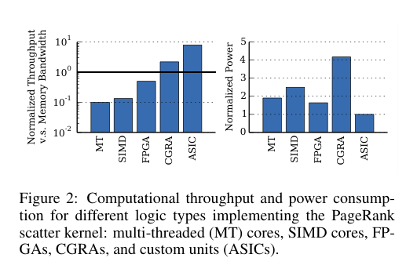 3. 异构可重构逻辑 (Heterogeneous Reconfigurable Logic)本节详细介绍了 HRL 阵列的硬件架构。HRL 的设计哲学是将计算、控制和数据布线进行针对性拆分，以实现最佳的面积和功耗权衡。 在系统层级上，一个 HRL 阵列（如图 3 所示）是一个由多种异构组件和静态可重构布线网络组成的网格。由于分析应用的计算流水线通常较浅，但需要处理很宽的内存读写数据，HRL 阵列的规模被有意设计得较小，并配备了宽位宽的 IO 接口。 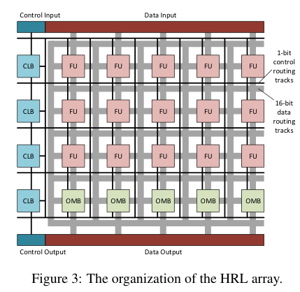 HRL 内部的构件（Blocks）：
HRL 布线网络（Routing Fabric）： 传统互连网络在面积和功耗中占大头。HRL 创新性地将数据路径和控制路径完全解耦（图 5）。 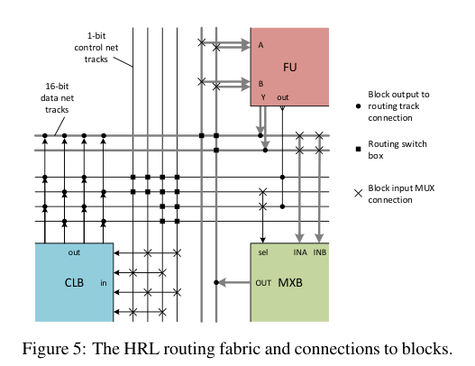
架构与 CAD 工具链协同： 架构层面的异构和双网络设计，需要计算机辅助设计（CAD）工具的支持才能将高层代码映射到硬件。HRL 全静态配置，不需要像处理器那样有指令编译器，而是复用了 FPGA 的标准设计流（逻辑综合、打包、布局、布线）。作者指出了此处存在的跨层接口与挑战：由于现有的 FPGA 工具不理解“总线布线”和“分离的数据/控制网络”，打包和布局（packing and placement）算法必须在两条物理独立的网络之间平衡连通性（Routability）和关键路径延迟（Critical path latency）以实现整体最佳性能。 4. 基于 HRL 的近数据处理系统 (Near-Data Processing with HRL)设计了单体的 HRL 阵列后，本节说明如何将其集成到完整的多栈三维内存系统中。作者提出了一个通用的硬件/软件通信模型，该模型独立于计算单元的类型（无论是 FPGA、CGRA 还是 HRL 均适用）。 在系统全貌中（图 7 和图 9），主处理器（Host Processor，传统的乱序多核芯片）通过高速串行链路连接到多个 3D 内存栈。每个 Vault 内部署了多个 PE，并配有通用通信硬件：一个处理本地或远程内存访问的通用加载/存储单元（相当于直接内存访问 DMA），一个 的暂存器缓冲（Scratchpad Buffer，用于驻留图处理的顶点数据等以减少 DRAM 访问），以及用于暂存发往不同消费者的中间数据的输出队列（Output Queues）。这里的 PE 使用物理地址直接访问内存，避开了虚拟内存转换和缓存一致性问题；这是作者做出的一项重要设计选择。 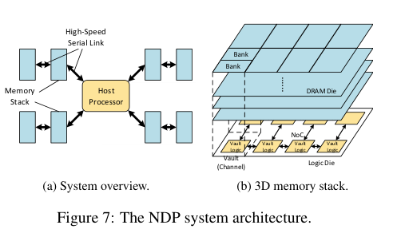 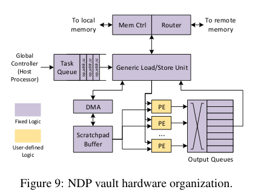 数据通信采用基于拉取（Pull-based）的模型（图 8）。数据密集型应用通常表现为并行计算阶段与通信阶段的迭代。在并行阶段，各 Vault 内的 PE 处理自己分配到的数据，将中间结果缓存在本地；完成后，主处理器将属于下一个周期某个 PE 的任务合并为任务描述符并分发；各 PE 收到任务后，主动从本地或远程 Vault “拉取”输入数据。这种软件分配任务、硬件拉取数据的协议设计，最大限度减少了昂贵的数据复制和同步开销。同时，为了避免计算阶段重构硬件的开销，HRL 阵列的配置码流直接存储在 Vault 的本地内存中，只需不到 100 个周期即可在所有阵列上并行完成加载。 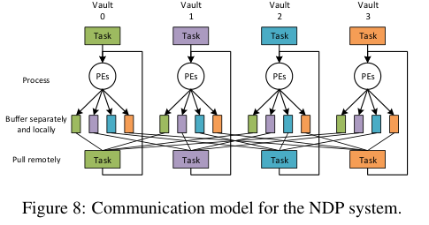 5. 实验方法 (Methodology)为了进行系统级的评估，作者选取了 MapReduce、图处理和深度神经网络领域的 11 种内核电路（Kernel Circuits, KCs）。 实验假设与量化选择： 由于神经网络等应用需要复杂的浮点运算，为了使评价在严格的功耗预算下更具可行性，作者在编译器层面做出了一个关键设定：所有应用均采用 48 位定点算术（48-bit fixed-point arithmetics）代替 64 位浮点运算（64-bit floating-point operations）。图 10 的误差分析证明，48 位定点运算能够保持绝对误差小于 （无量纲，原文未说明单位），同时大幅降低功耗和面积。作者也明确指出，这一假设在客观上对 FPGA 更有利（因为 FPGA 极不擅长浮点计算），如果是为了公平比较，CGRA 和 HRL 其实更容易集成宽位宽浮点硬件。 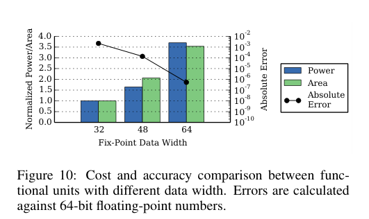 架构-EDA建模反馈链路： 在评估指标的获取上，体现了明确的跨层链路：
6. 评估结果 (Evaluation)本节展示了从单个阵列到整个 NDP 系统的性能与功耗优势。 HRL 参数选型： 作者分析了乘法器（Multiplier）对 HRL 阵列的影响（图 11）。乘法器是耗电和占地大户，并非所有 FU 都需要它。如果减少带乘法器的 FU 比例，逻辑本身的开销会下降，但因为布局受限会导致布线网络负担增加。实验表明，配置 的带乘法器 FU（即 FU/M’s）能在面积和功耗间取得最佳平衡。 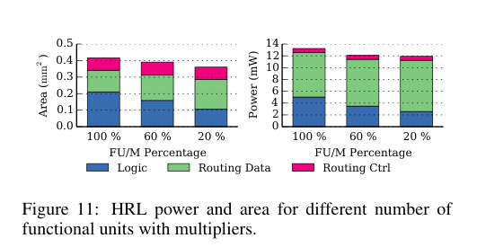 逻辑阵列级别的对比（面积与功耗）： 在同等逻辑容量下（图 12，图 13），FPGA 由于其极度灵活的 LUT 和布线网络，面积开销极为庞大，是 CGRA 和 HRL 的约三倍。 在功耗方面，HRL 跑在 频率下，其逻辑块耗电量与 的 FPGA 相当，但由于去除了 CGRA 中庞大的流水线寄存器和电路交换流控机制，HRL 的布线网络功耗极低（仅略高于半速的 FPGA），使得 HRL 在同等频率下比 CGRA 节省了 的总功耗。 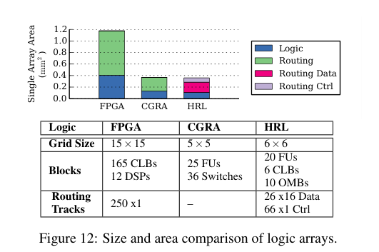 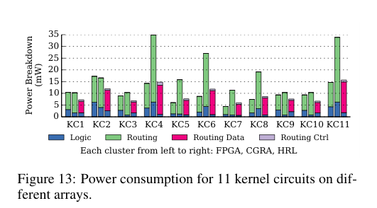 Vault 级别的对比（受限空间下的吞吐量）： 受到面积（FPGA 占地太大）和功耗（CGRA 耗电过高）的各自制约，在单 Vault 的物理预算下，系统只能容纳 5 个 FPGA 阵列或 11 个 CGRA 阵列，而能够容纳 16 个 HRL 阵列。 这种堆叠密度的差异直接导致了吞吐量的差距（图 14）。图中的基准线 1.0（无量纲，原文未说明单位）表示计算吞吐量恰好饱和内存峰值带宽。由于并发数量不足，FPGA 严重浪费了内存带宽；CGRA 表现较好，但只有 HRL 能在最多应用场景下提供足够的算力跑满带宽。在功耗效率（吞吐量/瓦特，图 15）上，HRL 平均比 FPGA 高 ，比 CGRA 高 。这证明了 HRL 是最适合内存墙内受限环境的计算载体。 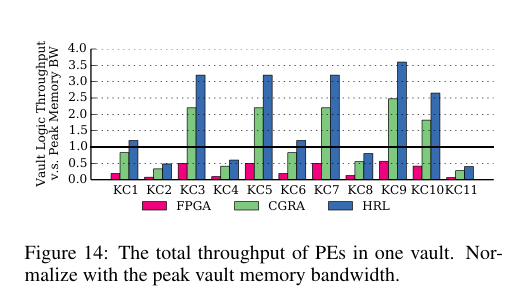 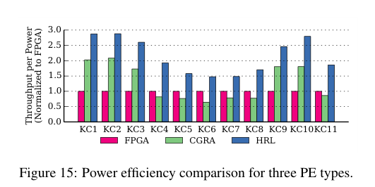 系统级分析： 在包含所有通信开销的全系统仿真中（图 16），以定制化 ASIC 这种绝对没有灵活性的理想专用硬件为性能上限。结果显示，基于多线程 CPU、FPGA 或 CGRA 的 NDP 系统因面积和功耗瓶颈，只能达到 ASIC 性能的 到 。相反，基于 HRL 的系统由于能够集成足够的 PE 并跑满 DRAM 带宽，在所有应用上平均达到了 ASIC 系统 的峰值性能。 从系统功耗拆解来看（图 17），HRL 系统的动态内存功耗因为高带宽利用率而增加，但其 PE 本身的功耗极佳，最终整体系统功耗仅比理想的 ASIC 系统高 。同时，相比于没有计算能力的原始 3D 内存，加入 HRL 逻辑带来的功耗附加值每栈仅约为 至 ，完全在热设计的安全容限内。 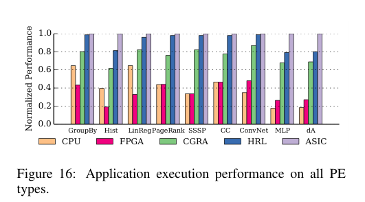 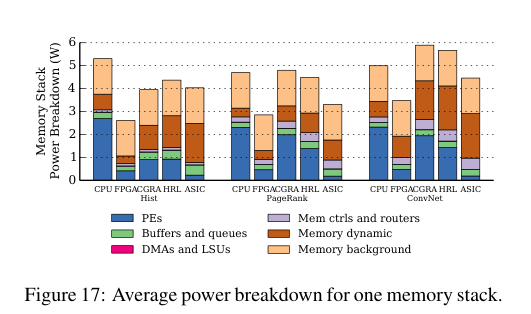 7. 结论与总结 (Conclusion)全文逻辑主线： 本文的研究始于一个明确的应用痛点：大数据分析应用存在严重的“内存墙”导致的能量浪费，亟需通过 3D 堆叠内存进行“近数据处理 (NDP)”来规避。然而，体系结构设计面临着极端的物理约束——内存底部的逻辑层存在严格的面积和功耗上限。作者审视了现有方案，发现多核 CPU/FPGA 受困于面积导致算力不足，CGRA 受困于布线功耗过热，ASIC 又缺乏通用性。为了打破僵局，作者通过深入的硬件级权衡，设计了融合两家之长的 HRL 阵列。它在计算上复用了 CGRA 面积高效的粗粒度单元，在控制上复用了 FPGA 灵活的查找表；在布线上做出了硬性的架构约束——物理上彻底分离数据网络（节省功耗的总线）和控制网络（支持分支的线网）。 结合标准化的软硬件拉取通信模型，架构层面对 HRL 的设计使得在给定的硅片面积和散热约束内，系统能够塞入更多的计算阵列。根据 EDA 综合数据的反馈，这一微架构级的微小优势在全系统层面被成倍放大，最终使得 HRL 能够在保持灵活性的前提下，实现比肩专用 ASIC（达到其 的性能）的吞吐表现。 核心假设与局限性： 读者在推广本文结论时需注意几个限制条件：
|